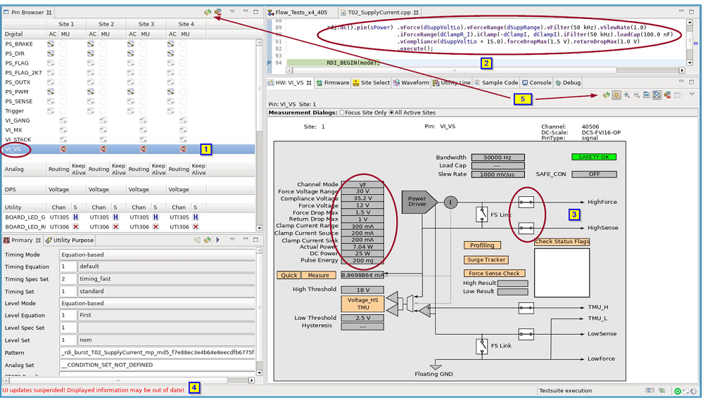

Hardware view
The Hardware view is part of the Hardware Perspective and is associated with the Pin Browser view.
When you select a pin in the Pin Browser, on the top of the Hardware view, the site number, pin name, and channel number for this pin are displayed. And the diagram in the Hardware view shows the test system circuitry relevant to the chosen pin.
For a pin selected in the Pin Browser (1), executing the measurement code (2), the results are displayed in the Hardware view (3).
If updates are required, a warning is displayed at the bottom of the screen (4). To update the displays, click the Refresh buttons (5).

The Hardware view provides the following functions:
- Shows the current settings for the selected pin
- Allows you to change some of the settings for debugging purposes
- Allows you to evaluate your changes (make current or voltage measurements)
- Allows you to compare the settings by Opening multi Hardware Views of different pins
In offline mode, the Hardware view cannot always return the correct settings of the hardware. This is especially true when hardware settings depend on pattern‑based conditional jumps and match loops.
If SmarTest determines that the state of the hardware cannot be evaluated correctly, "WARNING: ... - reported last DC state ... may not reflect online state." is issued in the ui_report window.
Hardware view Icons
The figure below shows the function of each of the icons at the right top of the Hardware view.
Refresh the hardware information in this view. After executing the test method, click this button, the hardware setting in this view will be updated to the settings in the test method. |
|
Link with editor and selection. When this button is pressed, click a pin in the Pin Browser view, the Hardware view is updated to the setting of this pin immediately. |
|
Pin this view. When the Hardware View displays a pin's setting, click this button, the display of the Hardware View is pinned to the current pin. |
|
Open new Hardware view. When the Hardware view displays a pin's setting, click this button, a new Hardware view displaying the setting of the same pin opens. You can use this feature to compare the settings of different pins. |
|
Zoom out on the Hardware view. |
|
Zoom in on the Hardware view. |
|
Resize the graph to it's default size. |
|
Resize the graph to fit the screen. |
|
Setup preferences. |
|
Show or hide properties. The button is active only for RF pins. Clicking this button shows or hides a tabular in the Hardware view, which displays current hardware state of an RF board. |
Functional changes
- Introduced before SmarTest 6.3.2
- SmarTest 6.5.0: Added Link with editor and selection button.
- SmarTest 6.5.0: Added Pin this view button.
- SmarTest 6.5.0: Multi Hardware views can be opened.
- SmarTest 6.5.2: Added Open new Hardware view button.
- SmarTest 6.5.2: Added RF hardware state button.